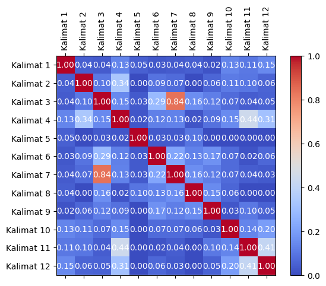
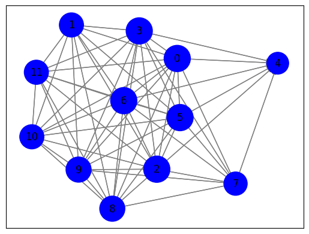
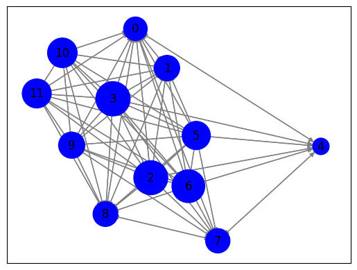

TUGAS BERITA#
Crawling berita menggunakan library BeautifulSoup. BeautifulSoup adalah pustaka Python yang digunakan untuk melakukan web scraping. Dalam konteks ini, BeautifulSoup akan digunakan untuk mengurai atau mem-parsing data HTML yang diambil dari situs web.
!pip install Sastrawi
from nltk.tokenize import word_tokenize
from nltk.corpus import stopwords
from sklearn.feature_extraction.text import TfidfVectorizer
from sklearn.feature_extraction.text import CountVectorizer
from Sastrawi.Stemmer.StemmerFactory import StemmerFactory
import warnings
import pandas as pd
import numpy as np
import nltk
import re
import csv
nltk.download('stopwords')
nltk.download('punkt')
warnings.filterwarnings('ignore')
Requirement already satisfied: Sastrawi in /usr/local/lib/python3.10/dist-packages (1.0.1)
[nltk_data] Downloading package stopwords to /root/nltk_data...
[nltk_data] Package stopwords is already up-to-date!
[nltk_data] Downloading package punkt to /root/nltk_data...
[nltk_data] Package punkt is already up-to-date!
import requests
from bs4 import BeautifulSoup
import nltk
# Unduh konten halaman web berita
url = "https://www.antaranews.com/berita/3799257/hoaks-kpu-tolak-pendaftaran-gibran-rakabuming-sebagai-bakal-cawapres-pada-25-oktober"
response = requests.get(url)
html = response.text
# Parsing halaman web menggunakan BeautifulSoup
soup = BeautifulSoup(html, 'html.parser')
# Ekstraksi teks dari elemen-elemen yang berisi berita
article = soup.find('div' ,class_="post-content clearfix") # Sesuaikan dengan struktur HTML halaman web berita
article_text = article.get_text()
#Case Folding
import re, string
article_text = re.sub(r'\d+', '', article_text) # Menghapus angka
article_text = article_text.lower() # Melakukan case folding
# Tokenisasi teks menjadi kalimat menggunakan nltk
nltk.download('punkt') # Pastikan Anda sudah mengunduh tokenisasi kalimat nltk
sentences = nltk.sent_tokenize(article_text)
# Cetak kalimat-kalimat
for sentence in sentences:
print(sentence)
jakarta (antara/jacx) – ketua umum partai gerindra sekaligus bakal calon presiden prabowo subianto, secara resmi mengumumkan bahwa putra sulung presiden joko widodo, gibran rakabuming raka, telah dipilih sebagai bakal cawapres dari partai gerindra pada minggu, (//).
sebuah unggahan video di facebook berdurasi delapan menit menarasikan bahwa kpu menolak pendaftaran gibran karena dinyatakan cacat hukum.
dalam video tersebut, narator juga menyebutkan pakar hukum tata negara denny indrayana menyebut putusan mk tentang syarat capres-cawapres tidak bisa dijadikan landasan hukum gibran rakabuming raka dalam mendaftar pilpres .
berikut narasi dalam unggahan tersebut:
“news hari ini ~ dinyatakan ccat hukum kpu tolk pendaftan cawapres gibran-- - politik terbaru”
namun, benarkah kpu menolak pendaftaran gibran rakabuming sebagai bakal cawapres?
unggahan video hoaks yang menarasikan kpu tolak pendaftaran gibran rakabuming sebagai cawapres pada oktober.
faktanya, belum ada informasi resmi mengenai hal tersebut.
(facebook)
penjelasan:
berdasarkan penelusuran, dalam video tersebut, narator hanya membacakan narasi dari laman cnn yang berjudul “denny indrayana: putusan mk tak bisa jadi dasar gibran daftar pilpres”.
dalam artikel tersebut, pakar hukum tata negara denny indrayana menyebut putusan mahkamah konstitusi (mk) tentang syarat capres-cawapres tidak bisa dijadikan landasan hukum gibran rakabuming raka dalam mendaftar pilpres .
denny beralasan ada konflik kepentingan ketua mk anwar usman dalam putusan itu.
download apps cnn indonesia sekarangn anwar dengan gibran-bakal cawapres yang bisa mendaftar karena putusan baru mk.
selain itu, kpu telah menerima berkas pendaftaran prabowo subianto dan gibran rakabuming raka sebagai bacapres dan bacawapres, rabu (/), videonya bisa dilihat di laman antara.
dengan demikian, klaim kpu tolak pendaftaran gibran rakabuming sebagai cawapres pada oktober merupakan hoaks.
klaim: kpu tolak pendaftaran gibran rakabuming sebagai bakal cawapres pada oktober
rating: hoaks
cek fakta: hoaks!
gibran mengundurkan diri dari pdip dan bergabung dengan prabowo pada oktober
cek fakta: hoaks!
foto jokowi temui anies dan tawarkan gibran jadi bakal cawapres
baca juga: pdip tunggu etika politik gibran kembalikan kartu tanda anggotapewarta: tim jacxeditor: indriani copyright © antara
[nltk_data] Downloading package punkt to /root/nltk_data...
[nltk_data] Package punkt is already up-to-date!
# Preprocessing
# Lowercasing
article_text = article_text.lower()
# Cleaning
article_text = ''.join(e for e in article_text if (e.isalnum() or e.isspace() or e == '.'))
# Hapus Angka
article_text = ''.join([char for char in article_text if not char.isdigit()])
# Tokenisasi teks menjadi kalimat menggunakan nltk
nltk.download('punkt')
sentences = nltk.sent_tokenize(article_text)
# Tokenisasi setiap kalimat menjadi kata-kata
words = [nltk.word_tokenize(sentence) for sentence in sentences]
[nltk_data] Downloading package punkt to /root/nltk_data...
[nltk_data] Package punkt is already up-to-date!
#custome stopword
from nltk.corpus import stopwords
# Mengambil daftar stopword bahasa Indonesia dari NLTK
stopwords_indonesia = set(stopwords.words("indonesian"))
# Sekarang, Anda memiliki daftar stopword yang telah diperbarui
print(stopwords_indonesia)
{'mengenai', 'apabila', 'diucapkan', 'bagai', 'wong', 'atas', 'diperkirakan', 'lain', 'jadilah', 'tambahnya', 'artinya', 'tanyanya', 'bersama', 'jelaslah', 'terus', 'berdatangan', 'mengatakannya', 'sudahlah', 'bertanya', 'diungkapkan', 'meyakinkan', 'tuturnya', 'saya', 'semata', 'sangatlah', 'apatah', 'hendak', 'berikan', 'seringnya', 'dong', 'sekitarnya', 'sewaktu', 'kala', 'atau', 'sebab', 'amat', 'itukah', 'sesekali', 'apaan', 'ternyata', 'punya', 'teringat-ingat', 'dalam', 'sayalah', 'begini', 'memperbuat', 'malahan', 'mulailah', 'janganlah', 'mengungkapkan', 'bulan', 'hingga', 'mampukah', 'kata', 'sepanjang', 'tiba', 'benarlah', 'bukankah', 'per', 'jika', 'berujar', 'lagian', 'juga', 'kapankah', 'terutama', 'tiap', 'harus', 'wah', 'diakhiri', 'hal', 'keseluruhan', 'pertama', 'kasus', 'antara', 'menanti-nanti', 'dimaksudnya', 'sebagaimana', 'dekat', 'tak', 'kelihatannya', 'terdiri', 'waktunya', 'meminta', 'sekaligus', 'katanya', 'bersiap', 'demikianlah', 'keluar', 'ditegaskan', 'pun', 'cuma', 'seberapa', 'masalahnya', 'meskipun', 'terlihat', 'kamulah', 'siapa', 'ikut', 'diperlukannya', 'kamilah', 'menandaskan', 'menyeluruh', 'semula', 'akhiri', 'tengah', 'diberikannya', 'begitukah', 'begitupun', 'tentu', 'ucap', 'menyebutkan', 'mengingatkan', 'memungkinkan', 'mengira', 'diperbuat', 'lainnya', 'ibaratkan', 'ditunjuk', 'paling', 'menanya', 'yang', 'menanyakan', 'mengucapkannya', 'sejauh', 'disebutkan', 'sehingga', 'lewat', 'menuturkan', 'dirinya', 'diketahui', 'antaranya', 'dimulainya', 'rasanya', 'sampaikan', 'satu', 'seseorang', 'cukup', 'sekecil', 'bahkan', 'ibu', 'wahai', 'diminta', 'karena', 'misal', 'setempat', 'sekarang', 'diperlihatkan', 'keinginan', 'kelima', 'agar', 'setinggi', 'jangankan', 'ungkapnya', 'kebetulan', 'mulai', 'tanyakan', 'hampir', 'sekitar', 'memberikan', 'dan', 'lima', 'mengatakan', 'akulah', 'menjelaskan', 'sana', 'baru', 'semacam', 'siapakah', 'selanjutnya', 'dimulai', 'tetap', 'berawal', 'persoalan', 'ujarnya', 'terhadapnya', 'sekiranya', 'mungkinkah', 'keduanya', 'tahu', 'diingat', 'walaupun', 'semasih', 'karenanya', 'dimaksudkan', 'padanya', 'termasuk', 'sendiri', 'ketika', 'dikerjakan', 'kini', 'terkira', 'ingin', 'setidak-tidaknya', 'bila', 'mengerjakan', 'dipunyai', 'saatnya', 'menyangkut', 'selain', 'masa', 'sama-sama', 'begitulah', 'memperkirakan', 'enggak', 'sebegini', 'jikalau', 'beberapa', 'sekalian', 'dijawab', 'seusai', 'tadinya', 'cara', 'mempergunakan', 'inginkan', 'menuju', 'sesuatu', 'sementara', 'masihkah', 'tandas', 'disampaikan', 'haruslah', 'mendapat', 'nanti', 'sedikitnya', 'sekadarnya', 'melakukan', 'seorang', 'sebagai', 'sebelumnya', 'inginkah', 'biasa', 'seingat', 'mengapa', 'sama', 'se', 'jauh', 'teringat', 'sesuatunya', 'tahun', 'disinilah', 'menanti', 'bagian', 'bermula', 'perlunya', 'semisalnya', 'semua', 'sepantasnya', 'telah', 'akhirnya', 'biasanya', 'belakangan', 'keterlaluan', 'nantinya', 'panjang', 'dijelaskan', 'pasti', 'waduh', 'enggaknya', 'diinginkan', 'harusnya', 'berlalu', 'masih', 'disebut', 'dikatakannya', 'ke', 'pula', 'sekalipun', 'sebagainya', 'sendirian', 'saling', 'manakala', 'sela', 'anda', 'nah', 'lanjutnya', 'tutur', 'sajalah', 'begitu', 'sebetulnya', 'pada', 'meski', 'kemudian', 'asal', 'ditunjuki', 'ditunjukkannya', 'olehnya', 'perlukah', 'dikira', 'maka', 'sesegera', 'diberi', 'mereka', 'katakanlah', 'benarkah', 'kecil', 'diperbuatnya', 'pertanyakan', 'menyatakan', 'minta', 'betulkah', 'ditanyakan', 'sekadar', 'tidak', 'sebelum', 'sejumlah', 'berikutnya', 'suatu', 'tampaknya', 'didapat', 'keseluruhannya', 'agak', 'bakalan', 'didatangkan', 'setiba', 'berapakah', 'justru', 'tepat', 'di', 'selamanya', 'dipersoalkan', 'bisakah', 'apa', 'betul', 'tetapi', 'semampunya', 'agaknya', 'hanya', 'sepantasnyalah', 'pentingnya', 'tertentu', 'makanya', 'pak', 'bersiap-siap', 'balik', 'menunjukkan', 'kok', 'jelas', 'terhadap', 'apakah', 'setidaknya', 'jelasnya', 'sambil', 'padahal', 'pertanyaan', 'rata', 'serupa', 'dahulu', 'masing', 'segera', 'tandasnya', 'tiga', 'pertama-tama', 'umum', 'diucapkannya', 'dimisalkan', 'menggunakan', 'ingat', 'bapak', 'menegaskan', 'saat', 'diri', 'menjawab', 'seketika', 'seperlunya', 'mulanya', 'memang', 'sebabnya', 'tapi', 'sudah', 'ini', 'seolah-olah', 'supaya', 'malah', 'sepertinya', 'belumlah', 'sebaik-baiknya', 'apalagi', 'besar', 'sesampai', 'bukanlah', 'dini', 'kinilah', 'kalaulah', 'bahwasanya', 'mempersiapkan', 'kemungkinan', 'selalu', 'mendatangi', 'tinggi', 'bisa', 'makin', 'serta', 'kapan', 'sampai-sampai', 'akhir', 'terjadilah', 'jelaskan', 'selama-lamanya', 'akan', 'saja', 'yakin', 'namun', 'oleh', 'memulai', 'dikarenakan', 'sesama', 'bagaikan', 'beri', 'rasa', 'seolah', 'memihak', 'memberi', 'seharusnya', 'kami', 'ingat-ingat', 'mengingat', 'inikah', 'sedang', 'bagaimanakah', 'ia', 'misalnya', 'diibaratkan', 'dilihat', 'menanyai', 'menunjuknya', 'tambah', 'dibuat', 'lalu', 'melihatnya', 'jumlah', 'secara', 'terjadinya', 'siap', 'demikian', 'memastikan', 'sinilah', 'sekali', 'sedikit', 'asalkan', 'berapa', 'dikatakan', 'sebesar', 'walau', 'jawab', 'diketahuinya', 'menyiapkan', 'tegasnya', 'selama', 'ibaratnya', 'tentang', 'secukupnya', 'tadi', 'toh', 'inilah', 'penting', 'bertanya-tanya', 'berturut', 'sendirinya', 'kemungkinannya', 'berlangsung', 'pastilah', 'berapalah', 'sekali-kali', 'terjadi', 'sejak', 'berturut-turut', 'merupakan', 'amatlah', 'hari', 'kira-kira', 'ibarat', 'siapapun', 'banyak', 'bagaimana', 'berkali-kali', 'setiap', 'percuma', 'berkeinginan', 'disebutkannya', 'macam', 'ditanyai', 'tersampaikan', 'terlebih', 'selaku', 'ucapnya', 'merekalah', 'terbanyak', 'nyatanya', 'berkehendak', 'jumlahnya', 'bilakah', 'mendapatkan', 'ada', 'guna', 'sebuah', 'meyakini', 'beginilah', 'katakan', 'maupun', 'baik', 'memperlihatkan', 'caranya', 'pihaknya', 'tegas', 'bagaimanapun', 'diibaratkannya', 'kalian', 'sebutlah', 'sesudah', 'usah', 'menyampaikan', 'lah', 'mana', 'tunjuk', 'mampu', 'jawaban', 'sepihak', 'berada', 'bagi', 'terdapat', 'diberikan', 'dilakukan', 'keadaan', 'mempunyai', 'datang', 'ditanya', 'lagi', 'setengah', 'tiba-tiba', 'adapun', 'mengakhiri', 'sebisanya', 'menaiki', 'buat', 'seluruhnya', 'kalau', 'andalah', 'sebut', 'daripada', 'kan', 'berarti', 'dimintai', 'entah', 'tampak', 'cukupkah', 'yakni', 'menunjuki', 'bermacam-macam', 'diakhirinya', 'seenaknya', 'sejenak', 'bukan', 'dipertanyakan', 'dimaksudkannya', 'disini', 'tanpa', 'ditunjukkan', 'sini', 'soal', 'dijelaskannya', 'kelihatan', 'seterusnya', 'hendaknya', 'gunakan', 'bersama-sama', 'dia', 'dimaksud', 'semampu', 'ditambahkan', 'dipergunakan', 'lanjut', 'lamanya', 'jangan', 'bung', 'setibanya', 'berlebihan', 'kenapa', 'ditunjuknya', 'kepadanya', 'belum', 'bekerja', 'usai', 'kitalah', 'berakhirlah', 'berkenaan', 'ungkap', 'kiranya', 'boleh', 'kembali', 'melainkan', 'sebaik', 'dilalui', 'untuk', 'masing-masing', 'melihat', 'rupanya', 'sedemikian', 'perlu', 'soalnya', 'lama', 'menantikan', 'dua', 'tertuju', 'ataukah', 'menjadi', 'awal', 'bertutur', 'itu', 'sebenarnya', 'sebutnya', 'dituturkannya', 'mengibaratkannya', 'manalagi', 'belakang', 'jawabnya', 'semuanya', 'jadi', 'terakhir', 'tersebut', 'dari', 'kelamaan', 'ditandaskan', 'diperlukan', 'itulah', 'tanya', 'sebegitu', 'setelah', 'berkata', 'semakin', 'ialah', 'semasa', 'entahlah', 'memerlukan', 'benar', 'akankah', 'bukannya', 'ataupun', 'luar', 'menurut', 'berapapun', 'melalui', 'sudahkah', 'terasa', 'mempersoalkan', 'bolehkah', 'pernah', 'bermaksud', 'mau', 'hanyalah', 'dialah', 'kapanpun', 'mendatangkan', 'sekurangnya', 'kedua', 'aku', 'sebaliknya', 'mengetahui', 'mengibaratkan', 'tentunya', 'seluruh', 'jadinya', 'menunjuk', 'kalaupun', 'seperti', 'menambahkan', 'demi', 'nyaris', 'dimungkinkan', 'dipastikan', 'memintakan', 'cukuplah', 'kira', 'diantaranya', 'kamu', 'menghendaki', 'ujar', 'berlainan', 'awalnya', 'antar', 'bakal', 'segala', 'menginginkan', 'pukul', 'merasa', 'berbagai', 'tentulah', 'turut', 'sering', 'dibuatnya', 'diingatkan', 'pantas', 'mula', 'adanya', 'masalah', 'sekurang-kurangnya', 'tidakkah', 'umumnya', 'yaitu', 'mirip', 'semaunya', 'sampai', 'semisal', 'lebih', 'pihak', 'semata-mata', 'tersebutlah', 'sangat', 'sebaiknya', 'segalanya', 'beginian', 'misalkan', 'sesaat', 'bahwa', 'kepada', 'kita', 'kurang', 'berakhir', 'terdahulu', 'berjumlah', 'dulu', 'dituturkan', 'para', 'sempat', 'empat', 'sesudahnya', 'berupa', 'tempat', 'kesampaian', 'mempertanyakan', 'mendatang', 'terlalu', 'waktu', 'mengucapkan', 'depan', 'membuat', 'adalah', 'digunakan', 'ditujukan', 'berikut', 'naik', 'khususnya', 'sebagian', 'beginikah', 'mungkin', 'bawah', 'bermacam', 'hendaklah', 'sedangkan', 'tidaklah', 'sebanyak', 'dengan', 'memisalkan', 'diantara', 'bolehlah', 'dimulailah', 'berakhirnya', 'dapat'}
# Stopword Removal
stop_words = set(stopwords.words('indonesian'))
filtered_sentences = []
for sentence in words:
filtered_sentence = [word for word in sentence if word.lower() not in stop_words]
filtered_sentences.append(filtered_sentence)
# Cetak kalimat-kalimat yang telah diproses
for filtered_sentence in filtered_sentences:
print(filtered_sentence)
# Tutup respons setelah digunakan
response.close()
['jakarta', 'antarajacx', 'ketua', 'partai', 'gerindra', 'calon', 'presiden', 'prabowo', 'subianto', 'resmi', 'mengumumkan', 'putra', 'sulung', 'presiden', 'joko', 'widodo', 'gibran', 'rakabuming', 'raka', 'dipilih', 'cawapres', 'partai', 'gerindra', 'minggu', '.']
['unggahan', 'video', 'facebook', 'berdurasi', 'delapan', 'menit', 'menarasikan', 'kpu', 'menolak', 'pendaftaran', 'gibran', 'dinyatakan', 'cacat', 'hukum', '.']
['video', 'narator', 'pakar', 'hukum', 'tata', 'negara', 'denny', 'indrayana', 'menyebut', 'putusan', 'mk', 'syarat', 'caprescawapres', 'dijadikan', 'landasan', 'hukum', 'gibran', 'rakabuming', 'raka', 'mendaftar', 'pilpres', '.']
['narasi', 'unggahan', 'news', 'dinyatakan', 'ccat', 'hukum', 'kpu', 'tolk', 'pendaftan', 'cawapres', 'gibran', 'politik', 'terbaru', 'kpu', 'menolak', 'pendaftaran', 'gibran', 'rakabuming', 'cawapres', 'unggahan', 'video', 'hoaks', 'menarasikan', 'kpu', 'tolak', 'pendaftaran', 'gibran', 'rakabuming', 'cawapres', 'oktober', '.']
['faktanya', 'informasi', 'resmi', '.']
['facebook', 'penjelasan', 'berdasarkan', 'penelusuran', 'video', 'narator', 'membacakan', 'narasi', 'laman', 'cnn', 'berjudul', 'denny', 'indrayana', 'putusan', 'mk', 'dasar', 'gibran', 'daftar', 'pilpres', '.']
['artikel', 'pakar', 'hukum', 'tata', 'negara', 'denny', 'indrayana', 'menyebut', 'putusan', 'mahkamah', 'konstitusi', 'mk', 'syarat', 'caprescawapres', 'dijadikan', 'landasan', 'hukum', 'gibran', 'rakabuming', 'raka', 'mendaftar', 'pilpres', '.']
['denny', 'beralasan', 'konflik', 'kepentingan', 'ketua', 'mk', 'anwar', 'usman', 'putusan', '.']
['download', 'apps', 'cnn', 'indonesia', 'sekarangn', 'anwar', 'gibranbakal', 'cawapres', 'mendaftar', 'putusan', 'mk', '.']
['kpu', 'menerima', 'berkas', 'pendaftaran', 'prabowo', 'subianto', 'gibran', 'rakabuming', 'raka', 'bacapres', 'bacawapres', 'rabu', 'videonya', 'laman', '.']
['klaim', 'kpu', 'tolak', 'pendaftaran', 'gibran', 'rakabuming', 'cawapres', 'oktober', 'hoaks', '.']
['klaim', 'kpu', 'tolak', 'pendaftaran', 'gibran', 'rakabuming', 'cawapres', 'oktober', 'rating', 'hoaks', 'cek', 'fakta', 'hoaks', 'gibran', 'mengundurkan', 'pdip', 'bergabung', 'prabowo', 'oktober', 'cek', 'fakta', 'hoaks', 'foto', 'jokowi', 'temui', 'anies', 'tawarkan', 'gibran', 'cawapres', 'baca', 'pdip', 'tunggu', 'etika', 'politik', 'gibran', 'kembalikan', 'kartu', 'tanda', 'anggotapewarta', 'tim', 'jacxeditor', 'indriani', 'copyright']
##TF-IDF
Index dalam bentuk angka
# Create a DataFrame to store TF-IDF values
import pandas as pd
from sklearn.feature_extraction.text import TfidfVectorizer
tfidf_df = pd.DataFrame()
# Create the TF-IDF vectorizer
vectorizer = TfidfVectorizer(stop_words='english')
tfidf_matrix = vectorizer.fit_transform(sentences)
# Extract feature names (words) and TF-IDF values
feature_names = vectorizer.get_feature_names_out()
tfidf_values = tfidf_matrix.toarray()
# Create a DataFrame from TF-IDF values
tfidf_df = pd.DataFrame(tfidf_values, columns=feature_names)
# Add a new column for sentences
tfidf_df['Kalimat'] = sentences
# Reorder columns to have 'Kalimat' at the beginning
tfidf_df = tfidf_df[['Kalimat'] + feature_names.tolist()]
# Display the resulting DataFrame
tfidf_df
| Kalimat | ada | anggotapewarta | anies | antara | antarajacx | anwar | apps | artikel | baca | ... | tolak | tolk | tunggu | umum | unggahan | usman | video | videonya | widodo | yang | |
|---|---|---|---|---|---|---|---|---|---|---|---|---|---|---|---|---|---|---|---|---|---|
| 0 | \n\r\njakarta antarajacx ketua umum partai ge... | 0.000000 | 0.000000 | 0.000000 | 0.000000 | 0.170768 | 0.000000 | 0.000000 | 0.000000 | 0.000000 | ... | 0.000000 | 0.000000 | 0.000000 | 0.170768 | 0.000000 | 0.00000 | 0.000000 | 0.000000 | 0.170768 | 0.000000 |
| 1 | sebuah unggahan video di facebook berdurasi de... | 0.000000 | 0.000000 | 0.000000 | 0.000000 | 0.000000 | 0.000000 | 0.000000 | 0.000000 | 0.000000 | ... | 0.000000 | 0.000000 | 0.000000 | 0.000000 | 0.240200 | 0.00000 | 0.190450 | 0.000000 | 0.000000 | 0.000000 |
| 2 | dalam video tersebut narator juga menyebutkan ... | 0.000000 | 0.000000 | 0.000000 | 0.000000 | 0.000000 | 0.000000 | 0.000000 | 0.000000 | 0.000000 | ... | 0.000000 | 0.000000 | 0.000000 | 0.000000 | 0.000000 | 0.00000 | 0.159031 | 0.000000 | 0.000000 | 0.000000 |
| 3 | berikut narasi dalam unggahan tersebut\nnews h... | 0.000000 | 0.000000 | 0.000000 | 0.000000 | 0.000000 | 0.000000 | 0.000000 | 0.000000 | 0.000000 | ... | 0.129364 | 0.170521 | 0.000000 | 0.000000 | 0.292892 | 0.00000 | 0.116114 | 0.000000 | 0.000000 | 0.129364 |
| 4 | faktanya belum ada informasi resmi mengenai ha... | 0.327983 | 0.000000 | 0.000000 | 0.000000 | 0.000000 | 0.000000 | 0.000000 | 0.000000 | 0.000000 | ... | 0.000000 | 0.000000 | 0.000000 | 0.000000 | 0.000000 | 0.00000 | 0.000000 | 0.000000 | 0.000000 | 0.000000 |
| 5 | facebook\n\npenjelasan\r\n\r\nberdasarkan pene... | 0.000000 | 0.000000 | 0.000000 | 0.000000 | 0.000000 | 0.000000 | 0.000000 | 0.000000 | 0.000000 | ... | 0.000000 | 0.000000 | 0.000000 | 0.000000 | 0.000000 | 0.00000 | 0.157237 | 0.000000 | 0.000000 | 0.175180 |
| 6 | dalam artikel tersebut pakar hukum tata negara... | 0.000000 | 0.000000 | 0.000000 | 0.000000 | 0.000000 | 0.000000 | 0.000000 | 0.233158 | 0.000000 | ... | 0.000000 | 0.000000 | 0.000000 | 0.000000 | 0.000000 | 0.00000 | 0.000000 | 0.000000 | 0.000000 | 0.000000 |
| 7 | denny beralasan ada konflik kepentingan ketua ... | 0.293576 | 0.000000 | 0.000000 | 0.000000 | 0.000000 | 0.293576 | 0.000000 | 0.000000 | 0.000000 | ... | 0.000000 | 0.000000 | 0.000000 | 0.000000 | 0.000000 | 0.34184 | 0.000000 | 0.000000 | 0.000000 | 0.000000 |
| 8 | download apps cnn indonesia sekarangn anwar de... | 0.000000 | 0.000000 | 0.000000 | 0.000000 | 0.000000 | 0.253644 | 0.295344 | 0.000000 | 0.000000 | ... | 0.000000 | 0.000000 | 0.000000 | 0.000000 | 0.000000 | 0.00000 | 0.000000 | 0.000000 | 0.000000 | 0.224059 |
| 9 | selain itu kpu telah menerima berkas pendaftar... | 0.000000 | 0.000000 | 0.000000 | 0.200209 | 0.000000 | 0.000000 | 0.000000 | 0.000000 | 0.000000 | ... | 0.000000 | 0.000000 | 0.000000 | 0.000000 | 0.000000 | 0.00000 | 0.000000 | 0.233123 | 0.000000 | 0.000000 |
| 10 | dengan demikian klaim kpu tolak pendaftaran gi... | 0.000000 | 0.000000 | 0.000000 | 0.000000 | 0.000000 | 0.000000 | 0.000000 | 0.000000 | 0.000000 | ... | 0.277216 | 0.000000 | 0.000000 | 0.000000 | 0.000000 | 0.00000 | 0.000000 | 0.000000 | 0.000000 | 0.000000 |
| 11 | klaim kpu tolak pendaftaran gibran rakabuming ... | 0.000000 | 0.130625 | 0.130625 | 0.112182 | 0.000000 | 0.000000 | 0.000000 | 0.000000 | 0.130625 | ... | 0.099097 | 0.000000 | 0.130625 | 0.000000 | 0.000000 | 0.00000 | 0.000000 | 0.000000 | 0.000000 | 0.000000 |
12 rows × 155 columns
Index dalam bentuk kalimat 1,2 dst
# Create a DataFrame to store TF-IDF values
tfidf_df = pd.DataFrame()
# Create the TF-IDF vectorizer
vectorizer = TfidfVectorizer(stop_words='english')
tfidf_matrix = vectorizer.fit_transform(sentences)
# Extract feature names (words) and TF-IDF values
feature_names = vectorizer.get_feature_names_out()
tfidf_values = tfidf_matrix.toarray()
# Create a DataFrame from TF-IDF values
tfidf_df = pd.DataFrame(tfidf_values, columns=feature_names)
# Add a new column for sentences
tfidf_df['Kalimat'] = sentences
# Reorder columns to have 'Kalimat' at the beginning
tfidf_df = tfidf_df[['Kalimat'] + feature_names.tolist()]
# Change the index to represent "Kalimat 1," "Kalimat 2," etc.
tfidf_df.index = [f'Kalimat {i+1}' for i in range(len(tfidf_df))]
# Display the resulting DataFrame
tfidf_df
| Kalimat | ada | anggotapewarta | anies | antara | antarajacx | anwar | apps | artikel | baca | ... | tolak | tolk | tunggu | umum | unggahan | usman | video | videonya | widodo | yang | |
|---|---|---|---|---|---|---|---|---|---|---|---|---|---|---|---|---|---|---|---|---|---|
| Kalimat 1 | \n\r\njakarta antarajacx ketua umum partai ge... | 0.000000 | 0.000000 | 0.000000 | 0.000000 | 0.170768 | 0.000000 | 0.000000 | 0.000000 | 0.000000 | ... | 0.000000 | 0.000000 | 0.000000 | 0.170768 | 0.000000 | 0.00000 | 0.000000 | 0.000000 | 0.170768 | 0.000000 |
| Kalimat 2 | sebuah unggahan video di facebook berdurasi de... | 0.000000 | 0.000000 | 0.000000 | 0.000000 | 0.000000 | 0.000000 | 0.000000 | 0.000000 | 0.000000 | ... | 0.000000 | 0.000000 | 0.000000 | 0.000000 | 0.240200 | 0.00000 | 0.190450 | 0.000000 | 0.000000 | 0.000000 |
| Kalimat 3 | dalam video tersebut narator juga menyebutkan ... | 0.000000 | 0.000000 | 0.000000 | 0.000000 | 0.000000 | 0.000000 | 0.000000 | 0.000000 | 0.000000 | ... | 0.000000 | 0.000000 | 0.000000 | 0.000000 | 0.000000 | 0.00000 | 0.159031 | 0.000000 | 0.000000 | 0.000000 |
| Kalimat 4 | berikut narasi dalam unggahan tersebut\nnews h... | 0.000000 | 0.000000 | 0.000000 | 0.000000 | 0.000000 | 0.000000 | 0.000000 | 0.000000 | 0.000000 | ... | 0.129364 | 0.170521 | 0.000000 | 0.000000 | 0.292892 | 0.00000 | 0.116114 | 0.000000 | 0.000000 | 0.129364 |
| Kalimat 5 | faktanya belum ada informasi resmi mengenai ha... | 0.327983 | 0.000000 | 0.000000 | 0.000000 | 0.000000 | 0.000000 | 0.000000 | 0.000000 | 0.000000 | ... | 0.000000 | 0.000000 | 0.000000 | 0.000000 | 0.000000 | 0.00000 | 0.000000 | 0.000000 | 0.000000 | 0.000000 |
| Kalimat 6 | facebook\n\npenjelasan\r\n\r\nberdasarkan pene... | 0.000000 | 0.000000 | 0.000000 | 0.000000 | 0.000000 | 0.000000 | 0.000000 | 0.000000 | 0.000000 | ... | 0.000000 | 0.000000 | 0.000000 | 0.000000 | 0.000000 | 0.00000 | 0.157237 | 0.000000 | 0.000000 | 0.175180 |
| Kalimat 7 | dalam artikel tersebut pakar hukum tata negara... | 0.000000 | 0.000000 | 0.000000 | 0.000000 | 0.000000 | 0.000000 | 0.000000 | 0.233158 | 0.000000 | ... | 0.000000 | 0.000000 | 0.000000 | 0.000000 | 0.000000 | 0.00000 | 0.000000 | 0.000000 | 0.000000 | 0.000000 |
| Kalimat 8 | denny beralasan ada konflik kepentingan ketua ... | 0.293576 | 0.000000 | 0.000000 | 0.000000 | 0.000000 | 0.293576 | 0.000000 | 0.000000 | 0.000000 | ... | 0.000000 | 0.000000 | 0.000000 | 0.000000 | 0.000000 | 0.34184 | 0.000000 | 0.000000 | 0.000000 | 0.000000 |
| Kalimat 9 | download apps cnn indonesia sekarangn anwar de... | 0.000000 | 0.000000 | 0.000000 | 0.000000 | 0.000000 | 0.253644 | 0.295344 | 0.000000 | 0.000000 | ... | 0.000000 | 0.000000 | 0.000000 | 0.000000 | 0.000000 | 0.00000 | 0.000000 | 0.000000 | 0.000000 | 0.224059 |
| Kalimat 10 | selain itu kpu telah menerima berkas pendaftar... | 0.000000 | 0.000000 | 0.000000 | 0.200209 | 0.000000 | 0.000000 | 0.000000 | 0.000000 | 0.000000 | ... | 0.000000 | 0.000000 | 0.000000 | 0.000000 | 0.000000 | 0.00000 | 0.000000 | 0.233123 | 0.000000 | 0.000000 |
| Kalimat 11 | dengan demikian klaim kpu tolak pendaftaran gi... | 0.000000 | 0.000000 | 0.000000 | 0.000000 | 0.000000 | 0.000000 | 0.000000 | 0.000000 | 0.000000 | ... | 0.277216 | 0.000000 | 0.000000 | 0.000000 | 0.000000 | 0.00000 | 0.000000 | 0.000000 | 0.000000 | 0.000000 |
| Kalimat 12 | klaim kpu tolak pendaftaran gibran rakabuming ... | 0.000000 | 0.130625 | 0.130625 | 0.112182 | 0.000000 | 0.000000 | 0.000000 | 0.000000 | 0.130625 | ... | 0.099097 | 0.000000 | 0.130625 | 0.000000 | 0.000000 | 0.00000 | 0.000000 | 0.000000 | 0.000000 | 0.000000 |
12 rows × 155 columns
from sklearn.metrics.pairwise import cosine_similarity
from sklearn.feature_extraction.text import TfidfVectorizer
# Indeks kalimat yang akan dibandingkan
sentence1_index = 0 # Ganti dengan indeks kalimat pertama yang ingin Anda bandingkan
sentence2_index = 1 # Ganti dengan indeks kalimat kedua yang ingin Anda bandingkan
# Ambil vektor TF-IDF untuk kedua kalimat
tfidf_vector1 = tfidf_matrix[sentence1_index]
tfidf_vector2 = tfidf_matrix[sentence2_index]
# Hitung cosine similarity antara kedua vektor
similarity = cosine_similarity(tfidf_vector1, tfidf_vector2)
# Cetak hasil cosine similarity
print(f"Cosine Similarity antara Kalimat {sentence1_index + 1} dan Kalimat {sentence2_index + 1}: {similarity[0][0]:.4f}")
Cosine Similarity antara Kalimat 1 dan Kalimat 2: 0.0445
# Matriks TF-IDF telah dihitung sebelumnya (tfidf_matrix)
# Hitung cosine similarity antara semua pasangan kalimat
similarity_matrix = cosine_similarity(tfidf_matrix, tfidf_matrix)
# Cetak hasil similarity_matrix
num_sentences = len(sentences) # Jumlah kalimat
for i in range(num_sentences):
for j in range(i+1, num_sentences):
similarity = similarity_matrix[i][j]
print(f"Cosine Similarity antara Kalimat {i + 1} dan Kalimat {j + 1}: {similarity:.4f}")
Cosine Similarity antara Kalimat 1 dan Kalimat 2: 0.0445
Cosine Similarity antara Kalimat 1 dan Kalimat 3: 0.0369
Cosine Similarity antara Kalimat 1 dan Kalimat 4: 0.1350
Cosine Similarity antara Kalimat 1 dan Kalimat 5: 0.0481
Cosine Similarity antara Kalimat 1 dan Kalimat 6: 0.0303
Cosine Similarity antara Kalimat 1 dan Kalimat 7: 0.0368
Cosine Similarity antara Kalimat 1 dan Kalimat 8: 0.0431
Cosine Similarity antara Kalimat 1 dan Kalimat 9: 0.0192
Cosine Similarity antara Kalimat 1 dan Kalimat 10: 0.1336
Cosine Similarity antara Kalimat 1 dan Kalimat 11: 0.1053
Cosine Similarity antara Kalimat 1 dan Kalimat 12: 0.1464
Cosine Similarity antara Kalimat 2 dan Kalimat 3: 0.1035
Cosine Similarity antara Kalimat 2 dan Kalimat 4: 0.3387
Cosine Similarity antara Kalimat 2 dan Kalimat 5: 0.0000
Cosine Similarity antara Kalimat 2 dan Kalimat 6: 0.0901
Cosine Similarity antara Kalimat 2 dan Kalimat 7: 0.0731
Cosine Similarity antara Kalimat 2 dan Kalimat 8: 0.0000
Cosine Similarity antara Kalimat 2 dan Kalimat 9: 0.0609
Cosine Similarity antara Kalimat 2 dan Kalimat 10: 0.1104
Cosine Similarity antara Kalimat 2 dan Kalimat 11: 0.0977
Cosine Similarity antara Kalimat 2 dan Kalimat 12: 0.0561
Cosine Similarity antara Kalimat 3 dan Kalimat 4: 0.1453
Cosine Similarity antara Kalimat 3 dan Kalimat 5: 0.0340
Cosine Similarity antara Kalimat 3 dan Kalimat 6: 0.2856
Cosine Similarity antara Kalimat 3 dan Kalimat 7: 0.8383
Cosine Similarity antara Kalimat 3 dan Kalimat 8: 0.1588
Cosine Similarity antara Kalimat 3 dan Kalimat 9: 0.1186
Cosine Similarity antara Kalimat 3 dan Kalimat 10: 0.0711
Cosine Similarity antara Kalimat 3 dan Kalimat 11: 0.0393
Cosine Similarity antara Kalimat 3 dan Kalimat 12: 0.0542
Cosine Similarity antara Kalimat 4 dan Kalimat 5: 0.0248
Cosine Similarity antara Kalimat 4 dan Kalimat 6: 0.1228
Cosine Similarity antara Kalimat 4 dan Kalimat 7: 0.1267
Cosine Similarity antara Kalimat 4 dan Kalimat 8: 0.0222
Cosine Similarity antara Kalimat 4 dan Kalimat 9: 0.0866
Cosine Similarity antara Kalimat 4 dan Kalimat 10: 0.1504
Cosine Similarity antara Kalimat 4 dan Kalimat 11: 0.4435
Cosine Similarity antara Kalimat 4 dan Kalimat 12: 0.3136
Cosine Similarity antara Kalimat 5 dan Kalimat 6: 0.0336
Cosine Similarity antara Kalimat 5 dan Kalimat 7: 0.0339
Cosine Similarity antara Kalimat 5 dan Kalimat 8: 0.0963
Cosine Similarity antara Kalimat 5 dan Kalimat 9: 0.0000
Cosine Similarity antara Kalimat 5 dan Kalimat 10: 0.0000
Cosine Similarity antara Kalimat 5 dan Kalimat 11: 0.0000
Cosine Similarity antara Kalimat 5 dan Kalimat 12: 0.0000
Cosine Similarity antara Kalimat 6 dan Kalimat 7: 0.2205
Cosine Similarity antara Kalimat 6 dan Kalimat 8: 0.1269
Cosine Similarity antara Kalimat 6 dan Kalimat 9: 0.1676
Cosine Similarity antara Kalimat 6 dan Kalimat 10: 0.0706
Cosine Similarity antara Kalimat 6 dan Kalimat 11: 0.0163
Cosine Similarity antara Kalimat 6 dan Kalimat 12: 0.0629
Cosine Similarity antara Kalimat 7 dan Kalimat 8: 0.1585
Cosine Similarity antara Kalimat 7 dan Kalimat 9: 0.1184
Cosine Similarity antara Kalimat 7 dan Kalimat 10: 0.0710
Cosine Similarity antara Kalimat 7 dan Kalimat 11: 0.0393
Cosine Similarity antara Kalimat 7 dan Kalimat 12: 0.0317
Cosine Similarity antara Kalimat 8 dan Kalimat 9: 0.1514
Cosine Similarity antara Kalimat 8 dan Kalimat 10: 0.0588
Cosine Similarity antara Kalimat 8 dan Kalimat 11: 0.0000
Cosine Similarity antara Kalimat 8 dan Kalimat 12: 0.0000
Cosine Similarity antara Kalimat 9 dan Kalimat 10: 0.0262
Cosine Similarity antara Kalimat 9 dan Kalimat 11: 0.1033
Cosine Similarity antara Kalimat 9 dan Kalimat 12: 0.0516
Cosine Similarity antara Kalimat 10 dan Kalimat 11: 0.1367
Cosine Similarity antara Kalimat 10 dan Kalimat 12: 0.1963
Cosine Similarity antara Kalimat 11 dan Kalimat 12: 0.4124
import pandas as pd
# Matriks TF-IDF telah dihitung sebelumnya (tfidf_matrix)
# Hitung cosine similarity antara semua pasangan kalimat
similarity_matrix = cosine_similarity(tfidf_matrix, tfidf_matrix)
# Nama kolom dan indeks untuk DataFrame
sentence_indices = [f"Kalimat {i + 1}" for i in range(len(sentences))]
# Buat DataFrame dari hasil cosine similarity
df = pd.DataFrame(similarity_matrix, columns=sentence_indices, index=sentence_indices)
# Cetak DataFrame
df
| Kalimat 1 | Kalimat 2 | Kalimat 3 | Kalimat 4 | Kalimat 5 | Kalimat 6 | Kalimat 7 | Kalimat 8 | Kalimat 9 | Kalimat 10 | Kalimat 11 | Kalimat 12 | |
|---|---|---|---|---|---|---|---|---|---|---|---|---|
| Kalimat 1 | 1.000000 | 0.044456 | 0.036870 | 0.134991 | 0.048101 | 0.030314 | 0.036809 | 0.043055 | 0.019228 | 0.133616 | 0.105267 | 0.146436 |
| Kalimat 2 | 0.044456 | 1.000000 | 0.103484 | 0.338668 | 0.000000 | 0.090059 | 0.073074 | 0.000000 | 0.060925 | 0.110404 | 0.097675 | 0.056094 |
| Kalimat 3 | 0.036870 | 0.103484 | 1.000000 | 0.145343 | 0.034004 | 0.285644 | 0.838308 | 0.158765 | 0.118589 | 0.071090 | 0.039325 | 0.054242 |
| Kalimat 4 | 0.134991 | 0.338668 | 0.145343 | 1.000000 | 0.024828 | 0.122810 | 0.126666 | 0.022223 | 0.086586 | 0.150404 | 0.443498 | 0.313604 |
| Kalimat 5 | 0.048101 | 0.000000 | 0.034004 | 0.024828 | 1.000000 | 0.033621 | 0.033947 | 0.096288 | 0.000000 | 0.000000 | 0.000000 | 0.000000 |
| Kalimat 6 | 0.030314 | 0.090059 | 0.285644 | 0.122810 | 0.033621 | 1.000000 | 0.220495 | 0.126881 | 0.167552 | 0.070628 | 0.016304 | 0.062920 |
| Kalimat 7 | 0.036809 | 0.073074 | 0.838308 | 0.126666 | 0.033947 | 0.220495 | 1.000000 | 0.158501 | 0.118391 | 0.070971 | 0.039259 | 0.031689 |
| Kalimat 8 | 0.043055 | 0.000000 | 0.158765 | 0.022223 | 0.096288 | 0.126881 | 0.158501 | 1.000000 | 0.151445 | 0.058777 | 0.000000 | 0.000000 |
| Kalimat 9 | 0.019228 | 0.060925 | 0.118589 | 0.086586 | 0.000000 | 0.167552 | 0.118391 | 0.151445 | 1.000000 | 0.026249 | 0.103257 | 0.051620 |
| Kalimat 10 | 0.133616 | 0.110404 | 0.071090 | 0.150404 | 0.000000 | 0.070628 | 0.070971 | 0.058777 | 0.026249 | 1.000000 | 0.136683 | 0.196337 |
| Kalimat 11 | 0.105267 | 0.097675 | 0.039325 | 0.443498 | 0.000000 | 0.016304 | 0.039259 | 0.000000 | 0.103257 | 0.136683 | 1.000000 | 0.412420 |
| Kalimat 12 | 0.146436 | 0.056094 | 0.054242 | 0.313604 | 0.000000 | 0.062920 | 0.031689 | 0.000000 | 0.051620 | 0.196337 | 0.412420 | 1.000000 |
import pandas as pd
import numpy as np
import matplotlib.pyplot as plt
# Matriks TF-IDF telah dihitung sebelumnya (tfidf_matrix)
# Hitung cosine similarity antara semua pasangan kalimat
similarity_matrix = cosine_similarity(tfidf_matrix, tfidf_matrix)
# Nama kolom dan indeks untuk DataFrame
sentence_indices = [f"Kalimat {i + 1}" for i in range(len(sentences))]
# Buat DataFrame dari hasil cosine similarity
df = pd.DataFrame(similarity_matrix, columns=sentence_indices, index=sentence_indices)
# Membuat grafik matriks
fig, ax = plt.subplots()
cax = ax.matshow(df, cmap='coolwarm')
fig.colorbar(cax)
# Memberi label pada sumbu X dan Y
ax.set_xticks(np.arange(len(df.columns)))
ax.set_yticks(np.arange(len(df.index)))
ax.set_xticklabels(df.columns, rotation=90)
ax.set_yticklabels(df.index)
# Menampilkan nilai similarity pada matriks
for i in range(len(df.index)):
for j in range(len(df.columns)):
text = ax.text(j, i, f'{df.iat[i, j]:.2f}', ha='center', va='center', color='w')
plt.show()

import networkx as nx
# Buat grafik dari matriks similarity
G = nx.Graph()
# Tambahkan simpul (node) ke grafik yang mewakili setiap kalimat
for sentence in sentences:
G.add_node(sentence)
# Tambahkan tepi (edge) antara kalimat berdasarkan similarity
for i in range(len(sentences)):
for j in range(i + 1, len(sentences)):
similarity = df.iloc[i, j] # Mengambil similarity dari DataFrame
if similarity > 0:
G.add_edge(sentences[i], sentences[j], weight=similarity)
# Hitung closeness centrality untuk setiap simpul
closeness_centrality = nx.closeness_centrality(G, distance='weight')
# Cetak closeness centrality
for sentence, centrality in closeness_centrality.items():
print(f"Closeness Centrality of {sentence}: {centrality:.4f}")
Closeness Centrality of
jakarta antarajacx ketua umum partai gerindra sekaligus bakal calon presiden prabowo subianto secara resmi mengumumkan bahwa putra sulung presiden joko widodo gibran rakabuming raka telah dipilih sebagai bakal cawapres dari partai gerindra pada minggu .: 22.6943
Closeness Centrality of sebuah unggahan video di facebook berdurasi delapan menit menarasikan bahwa kpu menolak pendaftaran gibran karena dinyatakan cacat hukum.: 12.8101
Closeness Centrality of dalam video tersebut narator juga menyebutkan pakar hukum tata negara denny indrayana menyebut putusan mk tentang syarat caprescawapres tidak bisa dijadikan landasan hukum gibran rakabuming raka dalam mendaftar pilpres .: 17.3149
Closeness Centrality of berikut narasi dalam unggahan tersebut
news hari ini dinyatakan ccat hukum kpu tolk pendaftan cawapres gibran politik terbaru
namun benarkah kpu menolak pendaftaran gibran rakabuming sebagai bakal cawapres
unggahan video hoaks yang menarasikan kpu tolak pendaftaran gibran rakabuming sebagai cawapres pada oktober.: 15.0925
Closeness Centrality of faktanya belum ada informasi resmi mengenai hal tersebut.: 18.6259
Closeness Centrality of facebook
penjelasan
berdasarkan penelusuran dalam video tersebut narator hanya membacakan narasi dari laman cnn yang berjudul denny indrayana putusan mk tak bisa jadi dasar gibran daftar pilpres.: 18.9294
Closeness Centrality of dalam artikel tersebut pakar hukum tata negara denny indrayana menyebut putusan mahkamah konstitusi mk tentang syarat caprescawapres tidak bisa dijadikan landasan hukum gibran rakabuming raka dalam mendaftar pilpres .: 18.2137
Closeness Centrality of denny beralasan ada konflik kepentingan ketua mk anwar usman dalam putusan itu.: 14.5641
Closeness Centrality of download apps cnn indonesia sekarangn anwar dengan gibranbakal cawapres yang bisa mendaftar karena putusan baru mk.: 18.3436
Closeness Centrality of selain itu kpu telah menerima berkas pendaftaran prabowo subianto dan gibran rakabuming raka sebagai bacapres dan bacawapres rabu videonya bisa dilihat di laman antara.: 14.2905
Closeness Centrality of dengan demikian klaim kpu tolak pendaftaran gibran rakabuming sebagai cawapres pada oktober merupakan hoaks.: 16.4018
Closeness Centrality of klaim kpu tolak pendaftaran gibran rakabuming sebagai bakal cawapres pada oktober
rating hoaks
cek fakta hoaks gibran mengundurkan diri dari pdip dan bergabung dengan prabowo pada oktober
cek fakta hoaks foto jokowi temui anies dan tawarkan gibran jadi bakal cawapres
baca juga pdip tunggu etika politik gibran kembalikan kartu tanda anggotapewarta tim jacxeditor indriani copyright antara: 14.8342
#membuat grafik berarah (Directed Graph - DiGraph) yang merepresentasikan hubungan antara kalimat-kalimat dalam teks berdasarkan kemiripan (cosine similarity)
import networkx as nx
import pandas as pd
# Matriks TF-IDF telah dihitung sebelumnya (tfidf_matrix)
# Hitung cosine similarity antara semua pasangan kalimat
similarity_matrix = cosine_similarity(tfidf_matrix, tfidf_matrix)
# Buat grafik berarah (DiGraph) berdasarkan similarity_matrix
G = nx.DiGraph()
for i in range(len(similarity_matrix)):
G.add_node(i) # Tambahkan node dengan indeks numerik
for i in range(len(similarity_matrix)):
for j in range(len(similarity_matrix)):
similarity = similarity_matrix[i][j]
if similarity > 0 and i != j: # Pastikan node tidak menghubungkan dirinya sendiri
G.add_edge(i, j)
# Hitung closeness centrality
closeness_centrality = nx.closeness_centrality(G)
# Visualisasi closeness centrality
pos = nx.spring_layout(G) # Atur layout grafik
node_size = [v * 1000 for v in closeness_centrality.values()] # Ubah ukuran node berdasarkan closeness centrality, dengan faktor pengurangan ukuran
nx.draw_networkx_nodes(G, pos, node_size=node_size, node_color='b')
nx.draw_networkx_edges(G, pos, edge_color='gray', arrows=True)
nx.draw_networkx_labels(G, pos)
plt.show()
# Cetak closeness centrality dari yang tertinggi hingga terendah
print("Closeness Centrality (Dari Tertinggi ke Terendah):")
sorted_closeness = sorted(closeness_centrality.items(), key=lambda x: x[1], reverse=True)
for node, closeness in sorted_closeness:
sentence = sentences[node] # Akses kalimat yang sesuai dengan node
print(f"Node {node}: Closeness Centrality {closeness:.4f}")
print(f"Kalimat: {sentence}")
print()

Closeness Centrality (Dari Tertinggi ke Terendah):
Node 0: Closeness Centrality 1.0000
Kalimat:
jakarta antarajacx ketua umum partai gerindra sekaligus bakal calon presiden prabowo subianto secara resmi mengumumkan bahwa putra sulung presiden joko widodo gibran rakabuming raka telah dipilih sebagai bakal cawapres dari partai gerindra pada minggu .
Node 2: Closeness Centrality 1.0000
Kalimat: dalam video tersebut narator juga menyebutkan pakar hukum tata negara denny indrayana menyebut putusan mk tentang syarat caprescawapres tidak bisa dijadikan landasan hukum gibran rakabuming raka dalam mendaftar pilpres .
Node 3: Closeness Centrality 1.0000
Kalimat: berikut narasi dalam unggahan tersebut
news hari ini dinyatakan ccat hukum kpu tolk pendaftan cawapres gibran politik terbaru
namun benarkah kpu menolak pendaftaran gibran rakabuming sebagai bakal cawapres
unggahan video hoaks yang menarasikan kpu tolak pendaftaran gibran rakabuming sebagai cawapres pada oktober.
Node 5: Closeness Centrality 1.0000
Kalimat: facebook
penjelasan
berdasarkan penelusuran dalam video tersebut narator hanya membacakan narasi dari laman cnn yang berjudul denny indrayana putusan mk tak bisa jadi dasar gibran daftar pilpres.
Node 6: Closeness Centrality 1.0000
Kalimat: dalam artikel tersebut pakar hukum tata negara denny indrayana menyebut putusan mahkamah konstitusi mk tentang syarat caprescawapres tidak bisa dijadikan landasan hukum gibran rakabuming raka dalam mendaftar pilpres .
Node 8: Closeness Centrality 0.9167
Kalimat: download apps cnn indonesia sekarangn anwar dengan gibranbakal cawapres yang bisa mendaftar karena putusan baru mk.
Node 9: Closeness Centrality 0.9167
Kalimat: selain itu kpu telah menerima berkas pendaftaran prabowo subianto dan gibran rakabuming raka sebagai bacapres dan bacawapres rabu videonya bisa dilihat di laman antara.
Node 1: Closeness Centrality 0.8462
Kalimat: sebuah unggahan video di facebook berdurasi delapan menit menarasikan bahwa kpu menolak pendaftaran gibran karena dinyatakan cacat hukum.
Node 10: Closeness Centrality 0.8462
Kalimat: dengan demikian klaim kpu tolak pendaftaran gibran rakabuming sebagai cawapres pada oktober merupakan hoaks.
Node 11: Closeness Centrality 0.8462
Kalimat: klaim kpu tolak pendaftaran gibran rakabuming sebagai bakal cawapres pada oktober
rating hoaks
cek fakta hoaks gibran mengundurkan diri dari pdip dan bergabung dengan prabowo pada oktober
cek fakta hoaks foto jokowi temui anies dan tawarkan gibran jadi bakal cawapres
baca juga pdip tunggu etika politik gibran kembalikan kartu tanda anggotapewarta tim jacxeditor indriani copyright antara
Node 7: Closeness Centrality 0.7857
Kalimat: denny beralasan ada konflik kepentingan ketua mk anwar usman dalam putusan itu.
Node 4: Closeness Centrality 0.6875
Kalimat: faktanya belum ada informasi resmi mengenai hal tersebut.
import networkx as nx
import pandas as pd
import matplotlib.pyplot as plt
from sklearn.feature_extraction.text import TfidfVectorizer
from sklearn.metrics.pairwise import cosine_similarity
# Matriks TF-IDF telah dihitung sebelumnya (tfidf_matrix)
# Hitung cosine similarity antara semua pasangan kalimat
similarity_matrix = cosine_similarity(tfidf_matrix, tfidf_matrix)
# Buat grafik berarah (DiGraph) berdasarkan similarity_matrix
G = nx.DiGraph()
for i in range(len(similarity_matrix)):
G.add_node(i) # Tambahkan node dengan indeks numerik
for i in range(len(similarity_matrix)):
for j in range(len(similarity_matrix)):
similarity = similarity_matrix[i][j]
if similarity > 0 and i != j: # Pastikan node tidak menghubungkan dirinya sendiri
G.add_edge(i, j, weight=similarity) # Gunakan similarity sebagai weight
# Hitung PageRank centrality
pagerank_centrality = nx.pagerank(G, weight='weight')
# Visualisasi PageRank centrality
pos = nx.spring_layout(G) # Atur layout grafik
node_size = [v * 10000 for v in pagerank_centrality.values()] # Ubah ukuran node berdasarkan PageRank, dengan faktor pengurangan ukuran
nx.draw_networkx_nodes(G, pos, node_size=node_size, node_color='b')
nx.draw_networkx_edges(G, pos, edge_color='gray', arrows=True)
nx.draw_networkx_labels(G, pos)
plt.show()
# Cetak PageRank centrality dari yang tertinggi hingga terendah
print("PageRank Centrality (Dari Tertinggi ke Terendah):")
sorted_pagerank = sorted(pagerank_centrality.items(), key=lambda x: x[1], reverse=True)
for node, pagerank in sorted_pagerank:
sentence = sentences[node] # Akses kalimat yang sesuai dengan node
print(f"Node {node}: PageRank Centrality {pagerank:.4f}")
print(f"Kalimat: {sentence}")
print()

PageRank Centrality (Dari Tertinggi ke Terendah):
Node 3: PageRank Centrality 0.1264
Kalimat: berikut narasi dalam unggahan tersebut
news hari ini dinyatakan ccat hukum kpu tolk pendaftan cawapres gibran politik terbaru
namun benarkah kpu menolak pendaftaran gibran rakabuming sebagai bakal cawapres
unggahan video hoaks yang menarasikan kpu tolak pendaftaran gibran rakabuming sebagai cawapres pada oktober.
Node 2: PageRank Centrality 0.1245
Kalimat: dalam video tersebut narator juga menyebutkan pakar hukum tata negara denny indrayana menyebut putusan mk tentang syarat caprescawapres tidak bisa dijadikan landasan hukum gibran rakabuming raka dalam mendaftar pilpres .
Node 6: PageRank Centrality 0.1161
Kalimat: dalam artikel tersebut pakar hukum tata negara denny indrayana menyebut putusan mahkamah konstitusi mk tentang syarat caprescawapres tidak bisa dijadikan landasan hukum gibran rakabuming raka dalam mendaftar pilpres .
Node 10: PageRank Centrality 0.0943
Kalimat: dengan demikian klaim kpu tolak pendaftaran gibran rakabuming sebagai cawapres pada oktober merupakan hoaks.
Node 11: PageRank Centrality 0.0906
Kalimat: klaim kpu tolak pendaftaran gibran rakabuming sebagai bakal cawapres pada oktober
rating hoaks
cek fakta hoaks gibran mengundurkan diri dari pdip dan bergabung dengan prabowo pada oktober
cek fakta hoaks foto jokowi temui anies dan tawarkan gibran jadi bakal cawapres
baca juga pdip tunggu etika politik gibran kembalikan kartu tanda anggotapewarta tim jacxeditor indriani copyright antara
Node 5: PageRank Centrality 0.0862
Kalimat: facebook
penjelasan
berdasarkan penelusuran dalam video tersebut narator hanya membacakan narasi dari laman cnn yang berjudul denny indrayana putusan mk tak bisa jadi dasar gibran daftar pilpres.
Node 9: PageRank Centrality 0.0734
Kalimat: selain itu kpu telah menerima berkas pendaftaran prabowo subianto dan gibran rakabuming raka sebagai bacapres dan bacawapres rabu videonya bisa dilihat di laman antara.
Node 1: PageRank Centrality 0.0692
Kalimat: sebuah unggahan video di facebook berdurasi delapan menit menarasikan bahwa kpu menolak pendaftaran gibran karena dinyatakan cacat hukum.
Node 8: PageRank Centrality 0.0663
Kalimat: download apps cnn indonesia sekarangn anwar dengan gibranbakal cawapres yang bisa mendaftar karena putusan baru mk.
Node 7: PageRank Centrality 0.0639
Kalimat: denny beralasan ada konflik kepentingan ketua mk anwar usman dalam putusan itu.
Node 0: PageRank Centrality 0.0599
Kalimat:
jakarta antarajacx ketua umum partai gerindra sekaligus bakal calon presiden prabowo subianto secara resmi mengumumkan bahwa putra sulung presiden joko widodo gibran rakabuming raka telah dipilih sebagai bakal cawapres dari partai gerindra pada minggu .
Node 4: PageRank Centrality 0.0293
Kalimat: faktanya belum ada informasi resmi mengenai hal tersebut.
import pandas as pd
# Hitung betweenness centrality
betweenness= nx.betweenness_centrality(G)
# Cetak DataFrame
print("DataFrame Betweenness Centrality:")
sorted_betweenness = dict(sorted(betweenness.items(), key=lambda item: item[1], reverse=True))
for node, between in sorted_betweenness.items():
print(f"Node {node}: {between:.4f}")
DataFrame Betweenness Centrality:
Node 0: 0.0248
Node 2: 0.0248
Node 3: 0.0248
Node 5: 0.0248
Node 6: 0.0248
Node 8: 0.0078
Node 9: 0.0078
Node 7: 0.0061
Node 1: 0.0000
Node 4: 0.0000
Node 10: 0.0000
Node 11: 0.0000
# Cetak betweenness
top_3_between = list(sorted_betweenness.items())[:3]
# Memasukkan 3 kalimat teratas dan informasi node ke dalam DataFrame
databw = {
"Node": [node for node, _ in top_3_between],
"Between": [between for _, between in top_3_between],
"Kalimat": [sentences[node] for node, _ in top_3_between]
}
df_top_3bw = pd.DataFrame(databw)
# Cetak DataFrame
print("Tiga Node Between Teratas")
df_top_3bw
Tiga Node Between Teratas
| Node | Between | Kalimat | |
|---|---|---|---|
| 0 | 0 | 0.024762 | \n\r\njakarta antarajacx ketua umum partai ge... |
| 1 | 2 | 0.024762 | dalam video tersebut narator juga menyebutkan ... |
| 2 | 3 | 0.024762 | berikut narasi dalam unggahan tersebut\nnews h... |